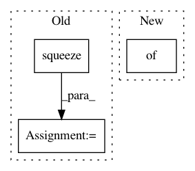

8f420a3b35944dcfa470dee958ef61dee221ce02,implementations/dualgan/datasets.py,MNISTM,__getitem__,#MNISTM#Any#,60
Before Change
// doing this so that it is consistent with all other datasets
// to return a PIL Image
img = Image.fromarray(img.squeeze().numpy(), mode="RGB")
if self.transform is not None:
img = self.transform(img)
After Change
item_A = img_pair[:, :, :half_w]
item_B = img_pair[:, :, half_w:]
return {"A": item_A, "B": item_B}
def __len__(self):
return len(self.files)
In pattern: SUPERPATTERN
Frequency: 3
Non-data size: 3
Instances
Project Name: eriklindernoren/PyTorch-GAN
Commit Name: 8f420a3b35944dcfa470dee958ef61dee221ce02
Time: 2018-04-23
Author: eriklindernoren@gmail.com
File Name: implementations/dualgan/datasets.py
Class Name: MNISTM
Method Name: __getitem__
Project Name: rusty1s/pytorch_geometric
Commit Name: 675b7884c09875486fdddffa2d8a6a12247ab4d7
Time: 2020-05-31
Author: matthias.fey@tu-dortmund.de
File Name: torch_geometric/utils/convert.py
Class Name:
Method Name: to_networkx
Project Name: rusty1s/pytorch_geometric
Commit Name: a998e7a1fa996edb4bcc1b34a0df5967ed6ec9e2
Time: 2020-05-13
Author: matthias.fey@tu-dortmund.de
File Name: torch_geometric/utils/convert.py
Class Name:
Method Name: to_networkx